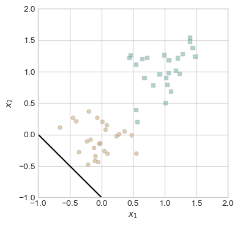
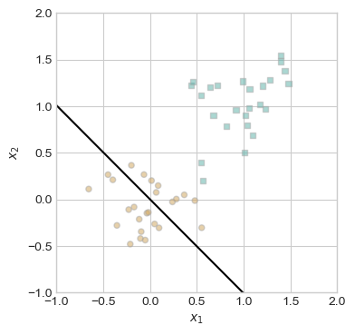
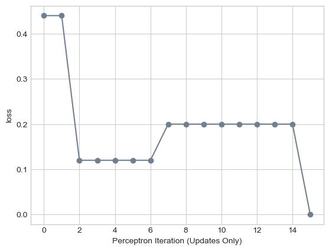

torch.manual_seed(1234)
X, y = perceptron_data(n_points = 50, noise = 0.3)
fig, ax = plt.subplots(1, 1, figsize = (4, 4))
ax.set(xlim = (-1, 2), ylim = (-1, 2))
plot_perceptron_data(X, y, ax)
In this lecture, we’ll study one of the oldest machine learning algorithms: the perceptron. Invented in 1943 but not actually implemented in hardware until 1958, the perceptron is still relevant today as a fundamental building-block of modern deep neural networks. Indeed, one of the implementations of neural networks in scikit-learn is still called the “multilayer perceptron.”
When first announced, the perceptron algorithm also displayed one of the first examples of AI Hype®. The New York Times uncritically repeated claims by a Navy rep that the perceptron algorithm would be the “embryo” of a computer that would “walk, talk, see, write, reproduce itself, and be conscious of its existence.” As we study and implement the perceptron, you may wish to reflect on what you are doing and decide for yourself whether you believe that you are building the “embryo” of any such capabilities yourself.
 Early AI Hype.
Early AI Hype.
The perceptron algorithm aims to find a rule for separating two distinct groups in some data. Here’s an example of some data on which we might aim to apply the perceptron:
import torch
from matplotlib import pyplot as plt
plt.style.use('seaborn-v0_8-whitegrid')
torch.manual_seed(1234)
def perceptron_data(n_points = 300, noise = 0.2, p_dims = 2):
y = torch.arange(n_points) >= int(n_points/2)
X = y[:, None] + torch.normal(0.0, noise, size = (n_points,p_dims))
X = torch.cat((X, torch.ones((X.shape[0], 1))), 1)
# convert y from {0, 1} to {-1, 1}
y = 2*y - 1
return X, y
X, y = perceptron_data(n_points = 300, noise = 0.2)
def plot_perceptron_data(X, y, ax):
assert X.shape[1] == 3, "This function only works for data created with p_dims == 2"
targets = [-1, 1]
markers = ["o" , ","]
for i in range(2):
ix = y == targets[i]
ax.scatter(X[ix,0], X[ix,1], s = 20, c = y[ix], facecolors = "none", edgecolors = "darkgrey", cmap = "BrBG", vmin = -2, vmax = 2, alpha = 0.5, marker = markers[i])
ax.set(xlabel = r"$x_1$", ylabel = r"$x_2$")
fig, ax = plt.subplots(1, 1)
X, y = perceptron_data()
plot_perceptron_data(X, y, ax)There are \(n = 300\) points of data. Each data point \(i\) has three pieces of information associated with it:
More generally, supervised prediction problems with \(n\) data points and \(k\) features can be summarized in terms of a feature matrix \(\mathbf{X} \in \mathbb{R}^{n \times p}\) and a target vector \(\mathbf{y} \in \mathbb{R}^n\).
The idea of a linear classifier is that we seek a hyperplane that approximately divides the data into its two classes. A hyperplane in \(\mathbb{R}^p\) is an affine subspace of dimension \(\mathbb{R}^{p-1}\). Such a hyperplane can be specified as the set of vectors \(\mathbf{x} \in \mathbb{R}^p\) satisfying the equation
\[ \langle \mathbf{w}, \mathbf{x}\rangle - b = \sum_{i = 1}^{p-1} w_i x_i - b = 0 \tag{7.1}\]
for some vector of weights \(\mathbf{w} \in \mathbb{R}^p\) and bias \(b \in R\). For mathematical convenience, it’s nicer to write this equation as
\[ \langle \tilde{\mathbf{w}}, \tilde{\mathbf{x}}\rangle = 0\;, \tag{7.2}\]
where we have defined the new feature vectors \(\tilde{\mathbf{x}} = (\mathbf{x}, 1)\) and \(\tilde{\mathbf{w}} = (\mathbf{w}, -b)\).
Throughout the remainder of these notes, we will assume that \(\mathbf{x}\) has constant final feature value equal to 1. We’ll therefore just write \(\tilde{\mathbf{x}}\) and \(\tilde{\mathbf{w}}\) instead of \(\mathbf{x}\) and \(\mathbf{w}\).
When \(k = 2\), a hyperplane is just a line. Here are two candidate hyperplanes that we could use to classify our data. Which one looks like it better separates the two classes?
def draw_line(w, x_min, x_max, ax, **kwargs):
w_ = w.flatten()
x = torch.linspace(x_min, x_max, 101)
y = -(w_[0]*x + w_[2])/w_[1]
l = ax.plot(x, y, **kwargs)
fig, ax = plt.subplots(1, 1, figsize = (4, 4))
plot_perceptron_data(X, y, ax)
w_0 = torch.Tensor([1, -1, 0])
w_1 = torch.Tensor([1, 1, -1])
draw_line(w_0, 0, 1, ax, color = "black", linestyle = "dashed", label = r"$w^{(0)}$")
draw_line(w_1, 0, 1, ax, color = "black", label = r"$w^{(1)}$")
l = ax.legend(ncol = 2)Whereas the weight vector \(\mathbf{w}^{(0)}\) generates a hyperplane that has data points from both classes on either side of it, the vector \(\mathbf{w}^{(1)}\) exactly separates the two classes. What does it mean to exactly separate the two classes? It means that:
\[ \langle \mathbf{w}^{(1)}, \mathbf{x}_i\rangle > 0 \Leftrightarrow y_i = 1\;. \tag{7.3}\]
That is, if someone gave you the weight vector \(\mathbf{w}^{(1)}\), you wouldn’t need to see the data labels: you could exactly recover them using Equation 7.3.
Let’s make this a little more precise. For fixed \(\mathbf{w}\), let \(s_i \triangleq \langle \mathbf{w}, \mathbf{x}_i \rangle\) by the score. The classification accuracy of the two-label perceptron with weight \(\mathbf{w}\)is
\[A(\mathbf{w}) \triangleq \frac{1}{n} \sum_{i = 1}^n \mathbb{1}[s_i y_i > 0]\;.\]
Higher accuracy means that the vector \(\mathbf{w}\) predicts more correct labels via Equation 7.3. The loss (also called the empirical risk) is
\[ R(\mathbf{w}) \triangleq 1 - A(\mathbf{w})\;. \tag{7.4}\]
It’s customary in machine learning to work with the loss. Since we want the accuracy to be high, we want the loss to be small. In other words, we want to minimize the function \(R\) with respect to the weight vector \(\mathbf{w}\). This means that we want:
\[ \DeclareMathOperator*{\argmin}{\arg\!\min\;} \mathbf{w} = \argmin_{\mathbf{w}'} R(\mathbf{w}') \tag{7.5}\]
Equation 11.1 is our first example of the framework called empirical risk minimization, in which we define an empirical risk on the data and then seek a parameter vector that minimizes it.
The perceptron algorithm aims to find a good choice of \(\mathbf{w}\) that makes the loss small using the following algorithm:
Now let’s go ahead and run the perceptron algorithm on some data. First we should set up our feature matrix \(\mathbf{X}\) and target vector \(\mathbf{y}\).
torch.manual_seed(1234)
X, y = perceptron_data(n_points = 50, noise = 0.3)
fig, ax = plt.subplots(1, 1, figsize = (4, 4))
ax.set(xlim = (-1, 2), ylim = (-1, 2))
plot_perceptron_data(X, y, ax)
You may be able to eyeball the fact that this data is linearly separable: it is possible to draw a line that perfectly separates the two clusters. We can think of the perceptron algorithm as searching for such a line.
Let’s start with a random guess for the weight vector \(\mathbf{w}\):
w = torch.Tensor([1, 1, 1])fig, ax = plt.subplots(1, 1, figsize = (4, 4))
ax.set(xlim = (-1, 2), ylim = (-1, 2))
plot_perceptron_data(X, y, ax)
draw_line(w, -1, 2, ax, color = "black")
Well, that doesn’t seem very promising. So, let’s do the perceptron update! First, we need to pick a random data point:
<torch._C.Generator at 0x7fab411df3d0>n = X.shape[0] # number of data points
i = torch.randint(n, size = (1,)) # index of a random data point
x_i = X[[i],] # the random data point itselfNow we need to compute the score:
s_i = x_i@wWe need to compare the score to the value of the target \(y_i\):
y_i = y[i]
s_i, y_i(tensor([1.1401]), tensor([-1]))In this case, the score and the target have opposite signs, which means that we need to perform the perceptron update:
w = w + y_i*x_iIf we now check the decision boundary again, it appears visually that it has improved slightly:
fig, ax = plt.subplots(1, 1, figsize = (4, 4))
ax.set(xlim = (-1, 2), ylim = (-1, 2))
plot_perceptron_data(X, y, ax)
draw_line(w, -1, 2, ax, color = "black")
Now it’s time for us to introduce a training loop. In the training loop, we simply repeat the above procedure for a specified number of times (or until convergence). We’re going to illustrate this using a specific organization of our computational steps, which will stick with us throughout most of the rest of these notes.
Perceptron and PerceptronOptimizer are defined in an external script. You’ll have the opportunity to implement and experiment with these classes in an upcoming assignment.from hidden.perceptron import Perceptron, PerceptronOptimizer
# instantiate a model and an optimizer
p = Perceptron()
opt = PerceptronOptimizer(p)
loss = 1.0
# for keeping track of loss values
loss_vec = []
n = X.size()[0]
while loss > 0: # dangerous -- only terminates if data is linearly separable
# not part of the update: just for tracking our progress
loss = p.loss(X, y)
loss_vec.append(loss)
# pick a random data point
i = torch.randint(n, size = (1,))
x_i = X[[i],:]
y_i = y[i]
# perform a perceptron update using the random data point
opt.step(x_i, y_i)We can track the progress of our training by checking the values of the loss function over time:
plt.plot(loss_vec, color = "slategrey")
plt.scatter(torch.arange(len(loss_vec)), loss_vec, color = "slategrey")
labs = plt.gca().set(xlabel = "Perceptron Iteration (Updates Only)", ylabel = "loss")
We can see that training completed with the achievement of zero loss; that is, perfect training accuracy.
The following figure illustrates the perceptron algorithm in action over several iterations.
torch.manual_seed(1234567)
# initialize a perceptron
p = Perceptron()
opt = PerceptronOptimizer(p)
p.loss(X, y)
# set up the figure
plt.rcParams["figure.figsize"] = (7, 5)
fig, axarr = plt.subplots(2, 3, sharex = True, sharey = True)
markers = ["o", ","]
marker_map = {-1 : 0, 1 : 1}
# initialize for main loop
current_ax = 0
loss = 1
loss_vec = []
while loss > 0:
ax = axarr.ravel()[current_ax]
# save the old value of w for plotting later
old_w = torch.clone(p.w)
# make an optimization step -- this is where the update actually happens
# now p.w is the new value
i, local_loss = opt.step(X, y)
# if a change was made, plot the old and new decision boundaries
# also add the new loss to loss_vec for plotting below
if local_loss > 0:
plot_perceptron_data(X, y, ax)
draw_line(old_w, x_min = -1, x_max = 2, ax = ax, color = "black", linestyle = "dashed")
loss = p.loss(X, y).item()
loss_vec.append(loss)
draw_line(p.w, x_min = -1, x_max = 2, ax = ax, color = "black")
ax.scatter(X[i,0],X[i,1], color = "black", facecolors = "none", edgecolors = "black", marker = markers[marker_map[y[i].item()]])
# draw_line(w, -10, 10, ax, color = "black")
ax.set_title(f"loss = {loss:.3f}")
ax.set(xlim = (-1, 2), ylim = (-1, 2))
current_ax += 1
plt.tight_layout()Does the perceptron algorithm always improve our accuracy? Is it guaranteed to terminate? If it does terminate, is the result guaranteed to be a weight vector \(\mathbf{w}\) that perfectly separates the two data classes?
Let’s first check that the perceptron update in Equation 7.6 actually improves the prediction on data point \(i\) if there is currently a mistake on that point (i.e. if \(s^{(t)}_i y_i < 0\)). We can do this by computing the new \(s_i^{(t+1)}\). Remember, what we want is for the sign of \(s_i^{(t+1)}\) to match \(y_i\).
\[ \begin{align} s_i^{(t+1)} &= \langle \mathbf{w}^{(t+1)}, \mathbf{x}_i\rangle &\text{(definition of $s_i^{(t+1)}$)}\\ &= \langle \mathbf{w}^{(t)} + y_i\mathbf{x}_i, \mathbf{x}_i\rangle &\text{(perceptron update)} \\ &= \langle \mathbf{w}^{(t)},\mathbf{x}_i\rangle + y_i\langle \mathbf{x}_i, \mathbf{x}_i\rangle &\text{(linearity of $\langle \cdot\rangle$)}\\ &= s_i^{(t)} + y_i \lVert \mathbf{x}_i\rVert_2^2\;. &\text{(definition of $s_i^{(t)}$ and $\lVert \mathbf{x}_i\rVert$)} \end{align} \]
Since \(\lVert\mathbf{x}_i\rVert > 0\), we conclude that \(s_i\) always moves in the right direction: if \(y_i = 1\) then \(s_i^{(t+1)} > s_i^{(t)}\), while if \(y_i = -1\) then \(s_i^{(t+1)} < s_i^{(t)}\).
Definition 7.1 (Linear Separability) A data set with feature matrix \(\mathbf{X} \in \mathbb{R}^{n\times k}\) and target vector \(y\in \{-1, 1\}\) is linearly separable if there exists a weight vector \(\mathbf{w}\) such that, for all \(i \in [n]\),
\[ \langle\mathbf{w}, \mathbf{x}_i\rangle > 0 \Leftrightarrow y = 1\;. \]
Take a moment to convince yourself of the following:
Proposition 7.1 (Nonconvergence of perceptron for nonseparable data) Suppose that \((\mathbf{X}, \mathbf{y})\) is not linearly separable. Then, the perceptron update does not converge. Furthermore, at no iteration of the algorithm is it the case that \(A(\mathbf{w}) = 1\).
It’s not as obvious that, if the data is linearly separable, then the perceptron algorithm will converge to a correct answer. Perhaps surprisingly, this is also true:
Theorem 7.1 (Convergence of perceptron for separable data) Suppose that \((\mathbf{X}, \mathbf{y})\) is linearly separable. Then:
where \(r(\mathbf{X}) = \max_{i \in [n]} \lVert \mathbf{x}_i \rVert\) and \(\gamma(\mathbf{X}, \mathbf{y})\) is a geometric measure called the margin of how far apart the two label classes are.
For a proof of Theorem 7.1, see p. 37-44 of Hardt and Recht (2022).
We have outlined the perceptron algorithm, which is able to find a separating hyperplane between two labeled groups of points when such a hyperplane exists.
We should, however, be troubled by the fact that the perceptron algorithm doesn’t converge when the data isn’t linearly separable. Maybe we could design a different algorithm that would allow us to find a parameter vector \(\mathbf{w}\) that makes the empirical risk \(R(\mathbf{w}) = 1 - A(\mathbf{w})\) as small as possible?
Unfortunately, we have a grave problem here:
Theorem 7.2 (0-1 Minimization for Linear Classifiers is NP Hard (Kearns, Schapire, and Sellie (1992))) Unless P = NP, there is no polynomial-time algorithm that can find a \(\mathbf{w}\) that solves Equation 11.1 when \(R(\mathbf{w}) = 1 - A(\mathbf{w})\) is the rate of incorrect classifications.
So, if our data is not linearly separable, not only will the perceptron algorithm not converge, but no classical algorithm will solve the minimization problem in polynomial time.
In order to make progress towards practical algorithms, we will need to slightly change our approach. This will be the subject of our next several chapters.
© Phil Chodrow, 2024